DFMPro Settings で Execute Assembly Rules only on Top Level Assembly Parts オプションが選択されている場合、DFMPro はトップレベルとして識別されたサブアセンブリ内部の問題を識別しません。ただし、2 つ以上のトップレベルのサブアセンブリまたはパーツ間の問題は識別されます。
これにより、アセンブリ解析を製品モジュール間のインターフェースレベルの問題に限定できます。このような設定は、製品アセンブリが非常に大規模で、製品アセンブリを全体または部分的にロードしたときにのみインターフェースレベルの問題が観察される場合に非常に有用です。
“トップレベル”コンポーネントを識別する際のキーワードは loaded と visible です。
ロードされており可視なすべてのパーツの共通親アセンブリがレベル 0 であり、このアセンブリの直下の子がレベル 1 のコンポーネントで、これらがトップレベル コンポーネントと見なされます。
詳細は以下のリンクを参照してください。
以下のサンプル Assembly は、Top-Level Assembly Analysis 機能を説明しています。
Where,
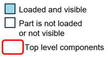
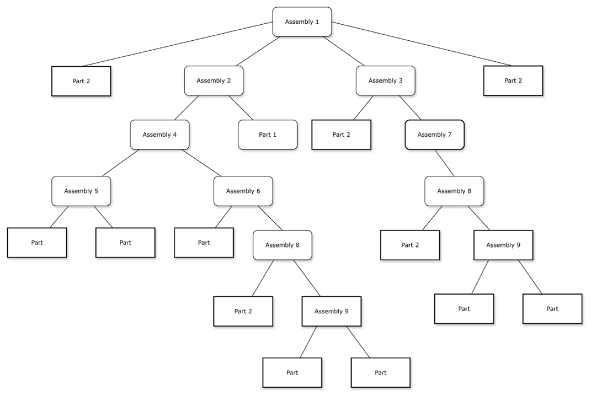
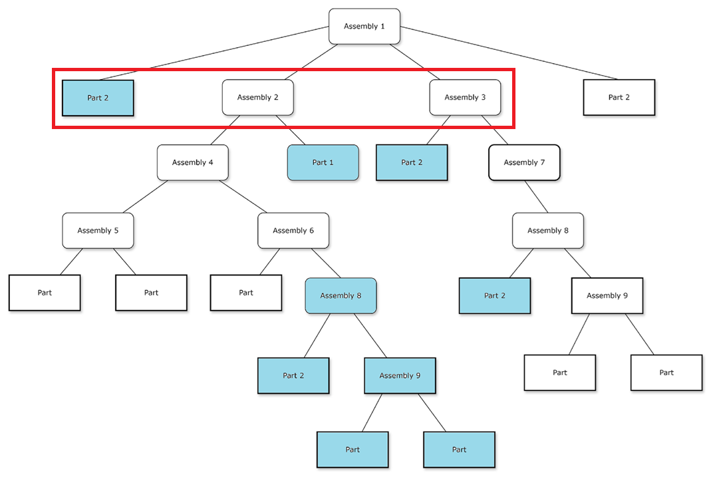
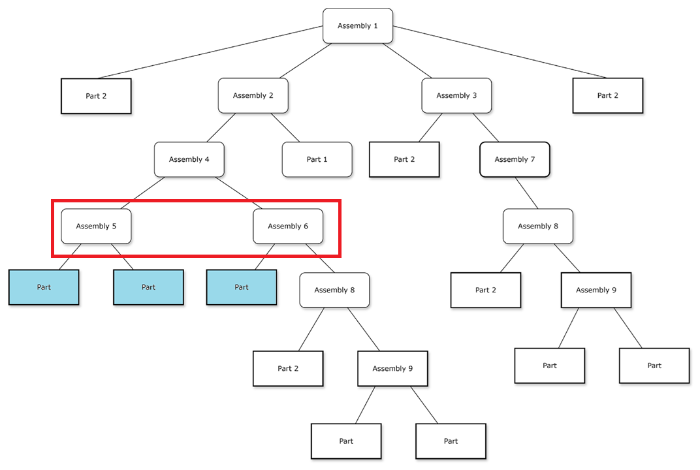
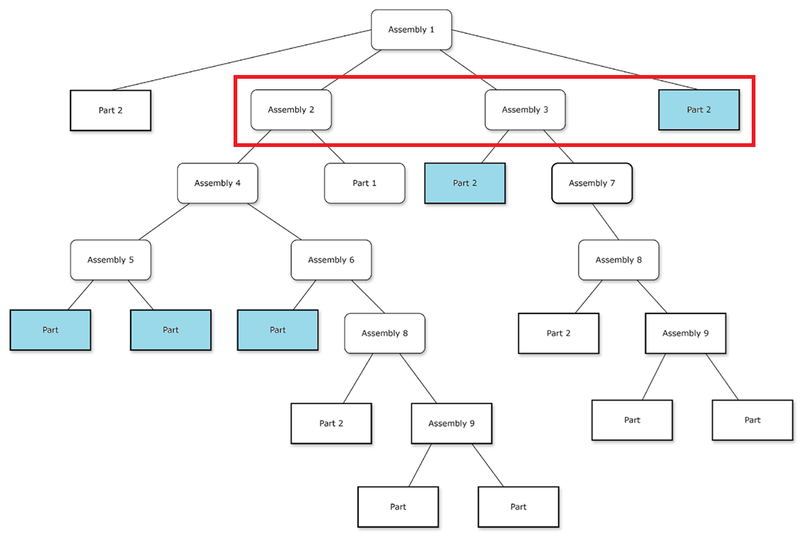
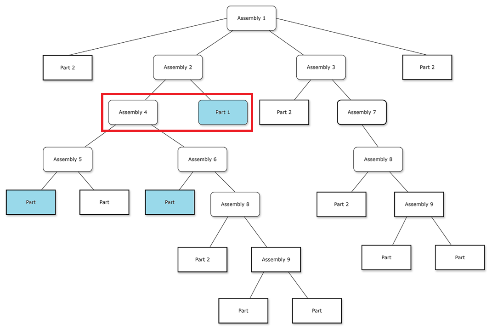
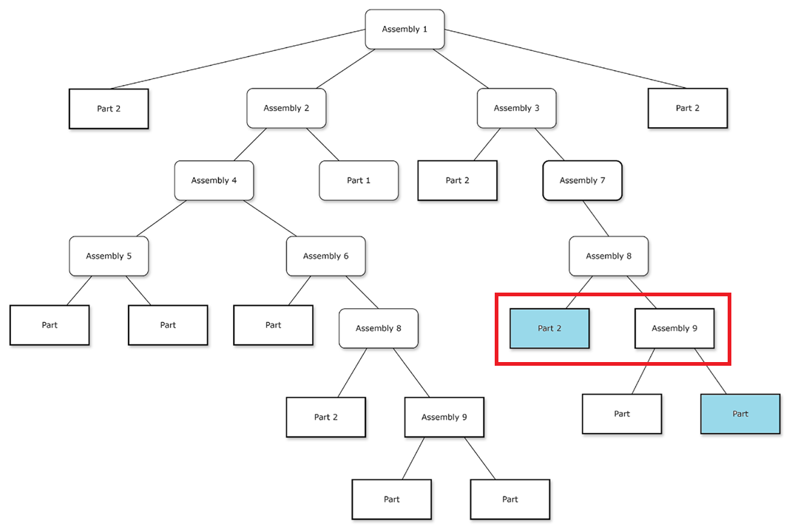
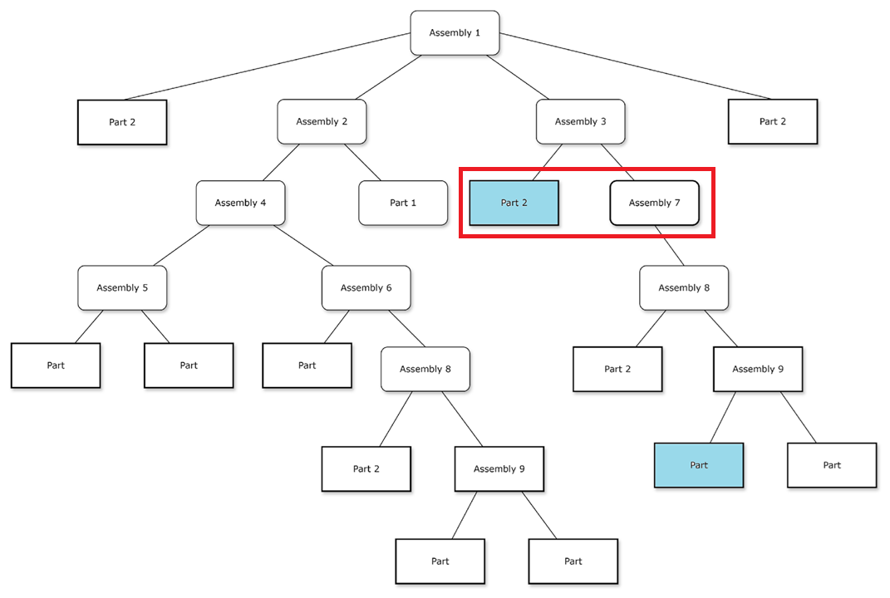
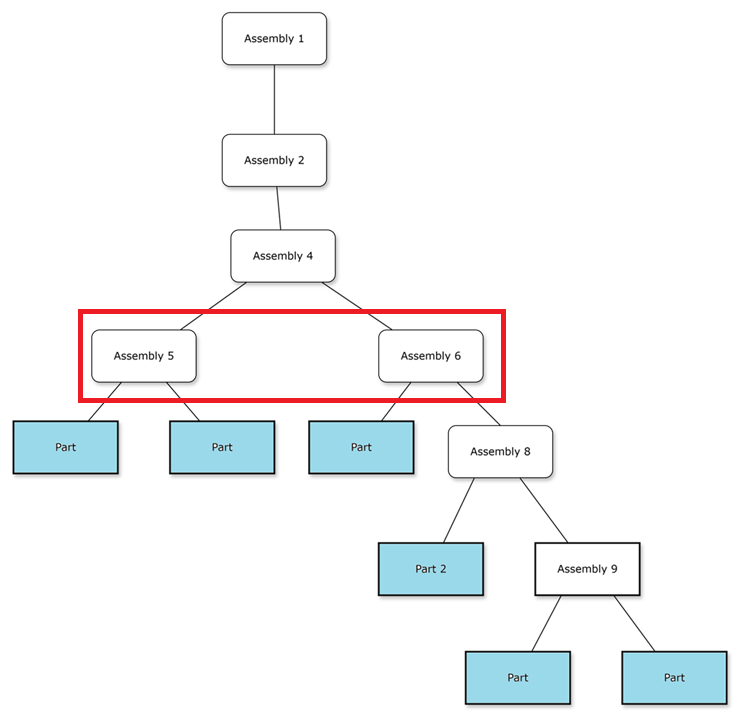
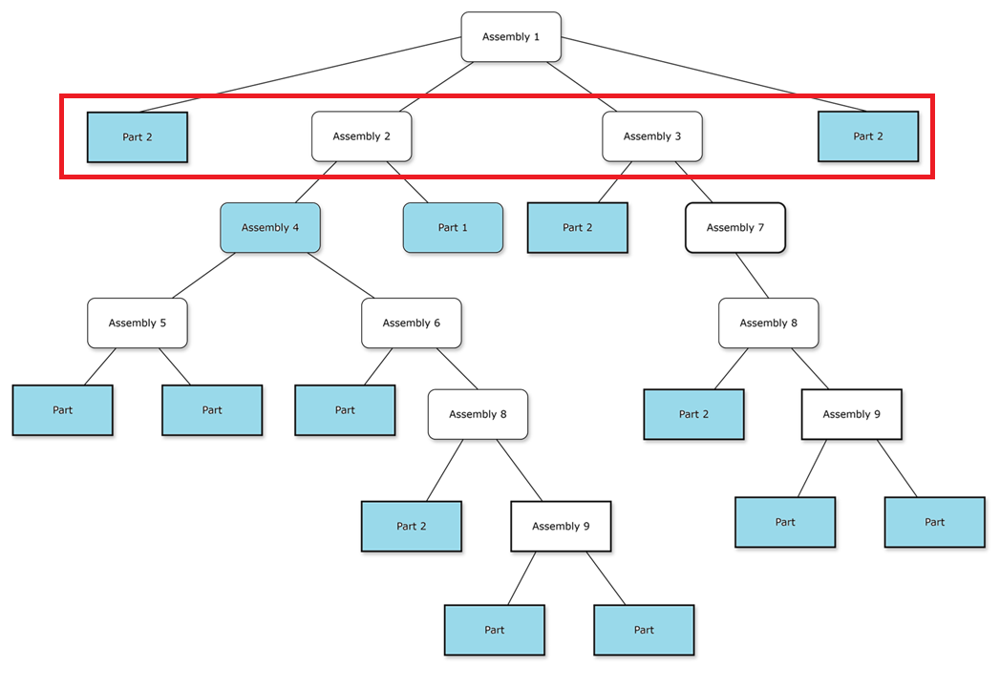
トップレベルの識別と解析は、DFMPro Settings での選択内容に依存します。以下に列挙するルールについては、個別のルール構成が DFMPro Settings より優先されます。
詳細については DFMPro Settings ページを参照してください。その他すべてのルールについては、DFMPro Settings が個別のルール構成より優先され、一貫した動作を保証します。
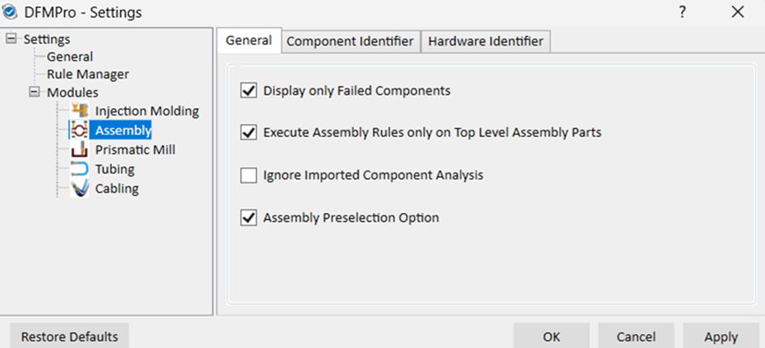
この機能強化は、すべてのアセンブリルールと一部の一般ルール（ユーザーが構成したカスタムルールを含む）を対象とします。サポートされるルールのリストを以下に示します: